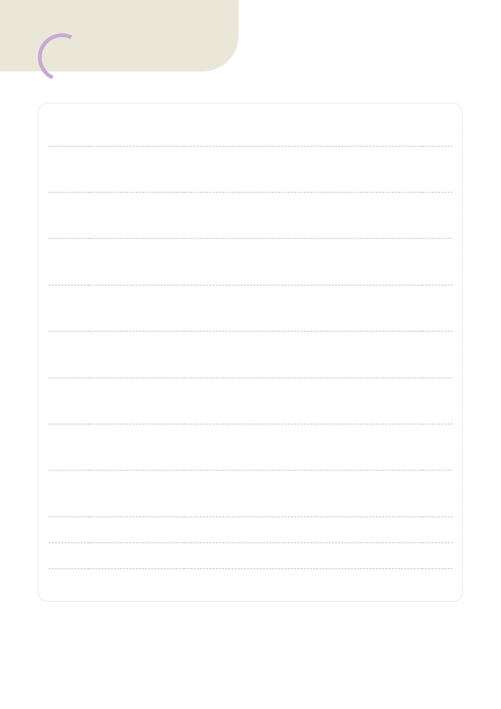
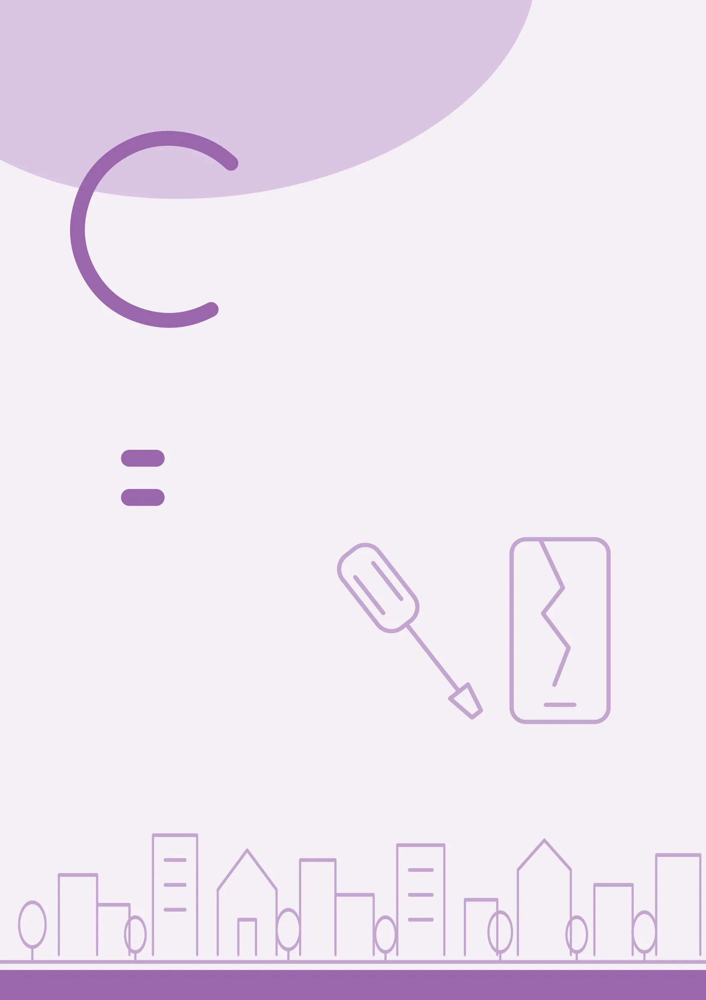

머리말• 2등장인물• 510단원고장과 수리10-1. 고장 상황• 910-2. 수리 요청• 1511단원실수와 고민11-1. 실수와 후회• 2511-2. 고민과 조언• 3112단원습관의 중요성12-1. 습관과 버릇• 4112-2. 계획과 실천• 4713단원연애와 결혼13-1. 연애의 조건• 5713-2. 사랑 이야기• 6314단원고향의 어제와 오늘14-1. 도시와 시골• 7314-2. 현재와 미래• 7915단원건강한 몸과 마음15-1. 튼튼한 몸• 8915-2. 건강한 마음• 9516단원일과 직업16-1. 아르바이트• 10516-2. 일하고 싶은 곳• 11117단원특별한 날17-1. 기념일• 12117-2. 소중한 기억• 12718단원연극18-1. 흥부와 놀부• 137문법과 표현• 147어휘• 16643B차례
10고장과 수리10-1고장 상황10-2수리 요청화면이 깜빡이더니 꺼졌어요.수리 센터에 맡기지 그래요?방이 더워요. 온도를 낮춰 주세요.네, 바로 낮출게요.수리가 끝나면 알려 주세요.네, 문자로 알려 드릴게요.1 가장 자주 쓰는 전자 제품이 뭐예요?2 물건을 오래 쓰는 방법이 있어요?
11실수와 고민11-1실수와 후회11-2고민과 조언
타고 보니 반대 방향이네요.미리 확인할 걸 그랬어요.매일 외우는데도 자꾸 잊어버려요.자기 전에 복습해 보세요.진로에 대해 고민이 많아요.선배한테 이야기해 봐요.1 실수했을 때 보통 어떻게 해요?2 고민이 있으면 누구한테 말해요?
12습관의 중요성12-1습관과 버릇12-2계획과 실천
엄마가 일찍 일어나게 하셨어요.좋은 습관이 생겼네요.아무리 바빠도 아침은 먹어요.저는 또 못 먹고 나와 버렸어요.매일 뛸 생각도 못 했어요.오늘부터 같이 해 봐요.1 고치고 싶은 버릇이 있어요?2 올해 꼭 하고 싶은 일이 뭐예요?
13연애와 결혼13-1연애의 조건13-2사랑 이야기
결혼하려면 아직 멀었어요.만나는 사람이 있잖아요.만나면 만날수록 좋아져요.두 사람 정말 잘 어울려요.관심 없는 척했어요.솔직하게 말해 보세요.1 몇 살쯤 결혼하는 게 좋을까요?2 기억에 남는 결혼식이 있어요?
14고향의 어제와 오늘14-1도시와 시골14-2현재와 미래
어릴 때 살았던 동네예요.지금은 많이 변했을걸요.고향도 서울만큼 복잡해요.그래도 공기는 맑지요?자연을 지키지 않으면 안 돼요.맞아요. 모두의 일이에요.1 고향에 새로 생긴 것이 있어요?2 시골 생활의 좋은 점이 뭘까요?
15건강한 몸과 마음15-1튼튼한 몸15-2건강한 마음
매일 걸었더니 몸이 가벼워졌어요.저도 산책이라도 해야겠어요.일하느라고 밥도 못 먹었어요.아무리 바빠도 챙겨 드세요.어제 일찍 잤어야 했어요.오늘은 푹 쉬세요.1 하루에 보통 몇 시간 자요?2 어디에 있을 때 마음이 제일 편해요?
16일과 직업16-1아르바이트16-2일하고 싶은 곳
가게에 손님이 많은 모양이에요.직원을 더 뽑아야 할 텐데요.취직한다면 뭘 하고 싶어요?해외 출장을 가 보고 싶어요.경험이 없어도 지원할 수 있어요?네, 누구든지 할 수 있어요.1 아르바이트를 하면 어떤 점이 좋아요?2 직장을 고를 때 뭐가 중요해요?
17특별한 날17-1기념일17-2소중한 기억
마침 전화하려던 참이었어요.잘됐네요. 내일 시간 있어요?꽃을 받고 얼마나 기뻤는지 몰라요.꽃 선물이라니 부럽네요.선물을 사는 대신에 편지를 썼어요.정말 특별한 선물이네요.1 기억에 남는 생일이 있어요?2 올해 가장 기다리는 날이 언제예요?
18연극18-1흥부와 놀부
무대에서 정말 잘할 수 있을까요?그럼요. 잘할 수 있다니까요.대사를 또 잊어버리고 말았어요.한 번만 더 연습해 봐요.공연이 몇 시에 시작해요?일곱 시예요. 늦지 마세요.1 연극이나 공연을 본 적이 있어요?2 어떤 역할을 해 보고 싶어요?
34 ta grammatika kartasi · har birida qoida, jadval, misollar va 5 ta topshiriq한국어 3B문법과표현Grammatika va iboralar · mashqlar bilan3B
단원과문법과 표현쪽10고장과 수리10-1①-더니②-지 그래(요)?14910-2①사동 ① -이-, -히-, -리-②사동 ② -기-, -우-, -추-15011실수와 고민11-1①-고 보니②-을 걸 (그랬다)15111-2①-는데도, -은데도, 인데도②에 대해(서), 에 대한15212습관의 중요성12-1①-게 하다②아무리 -어도15312-2①-을 생각도 못 하다②-어 버리다15413연애와 결혼13-1①-으려면 멀었다②-잖아(요), (이)잖아(요)15513-2①-으면 -을수록②-는 척하다, -은 척하다15614고향의 어제와오늘14-1①-었던, 이었던②-을걸(요), 일걸(요)15714-2①만큼②-지 않으면 안 되다15815건강한 몸과마음15-1①-었더니②(이)라도15915-2①-느라(고)②-었어야 하다16016일과 직업16-1①-는 모양이다, -은 모양이다②-어야 할 텐데16116-2①-는다면, -다면, (이)라면②누구든(지), 언제든(지) 등16217특별한 날17-1①-으려던 참이다②얼마나 -는지 모르다16317-2①-다니(요), (이)라니(요)②-는 대신(에), -은 대신(에)16418연극18-1①-는다니까(요), -다니까(요)②-고 말다1651483B문법과 표현Grammatika mundarijasi
1동·형-더니TIPS▶과거에 직접 보거나 겪은 일을 떠올리며, 그 뒤에 달라진 상황이나 그 일 때문에 생긴 결과를 말할 때 씁니다.동·형 + -더니읽다,만들다, 덥다읽더니, 만들더니,덥더니① 대조: 전에는 ~지금은작년에는싸다 /올해는비싸다작년에는 싸더니올해는 비싸요② 앞일의 결과눈이 오다 /길이 막히다눈이 오더니 길이막혔어요남의 행동: 2·3인칭지아가 얇게 입더니 감기에 걸렸어요(앞뒤 주어 같음)내 기분·몸: 1인칭아까는 춥더니 이제 좀 덥네요예딜노자 씨가 전에는 조용하더니 요즘은 말이 많아요.가: 민수 씨가 시험에 합격했대요.나: 매일 도서관에 가더니 합격했네요.아침에는 목이 좀 아프더니 지금은 열도 나요.내 행동에는 안 씁니다. 예: 제가 얇게 입더니 감기에 걸렸어요.(×)뒤에 명령문·청유문, 미래의 일은 오지 않습니다.과거의 일이어도 -었-을 안 붙입니다. 예: 비가 왔더니 (×) → 오더니(○)연습 MashqIkki gapni -더니 bilan birlashtiring.보기어제는 비가 왔어요. 오늘은 날씨가 좋아요.1.동생이 과자를 많이 먹었어요. 배탈이 났어요.2.이 길이 전에는 좁았어요. 지금은 넓어졌어요.3.아지즈가 매일 연습했어요. 1등을 했어요.4.아까는 배가 고팠어요. 지금은 괜찮아요.2동-지 그래(요)?TIPS▶상대방의 사정을 듣거나 보고 ‘이렇게 해 보면 좋겠다’고 가볍게 제안하거나 권할 때 씁니다. 동사 어간에 받침과 관계없이 붙입니다.동 + -지 그래요?걷다, 앉다,만들다걷지 그래요?, 앉지그래요?, 만들지그래요?반말: -지 그래?가다, 찾다가지 그래?, 찾지그래?-어 보다와 함께신다,연락하다신어 보지 그래요?,연락해 보지 그래요?주어: 듣는 사람(2인칭)(지아 씨,) 급하면 택시를 타지 그래요?예길을 잘 모르면 지도 앱을 보지 그래요?가: 요즘 잠을 잘 못 자요.나: 낮에 운동을 좀 하지 그래요?피곤해 보이는데 오늘은 일찍 자지 그래?‘-는 게 어때요?’는 2인칭뿐 아니라 ‘우리·저희’에도 씁니다.예: 우리 같이 걷지 그래요? (×) → 우리 같이 걷는 게 어때요? (○)윗사람에게 권할 때는 ‘-으시지 그래요?’를 씁니다. 예: 여기 앉으시지그래요?‘-으면’과 자주 함께 씁니다. 예: 졸리면 세수를 하지 그래요?연습 MashqQavsdagi so'zdan foydalanib maslahat bering.보기다리가 아파요. (여기에 앉다)1.방이 너무 더워요. (창문을 열다)2.한국어 발음이 어려워요. (뉴스를 자주 듣다)3.이 바지가 마음에 들어요. (입어 보다)4.혼자 하기 힘들어요. (지아한테 부탁하다)명 ot · 동 fe'l · 형 sifat · 보기 namuna · 쪽 bet3B | 문법과 표현14910-1Buzilish va ta'mirlash · 1-dars문법과 표현Grammatika va iboralar10단원지아가 한국어를 잘하네.드라마를 보더니 늘었어.어제는 비가 오더니 오늘은 날씨가 좋아요.옷이 좀 작은 것 같아.큰 걸로 바꾸지 그래?여기에 앉지 그래요?
1동사동 ① -이-, -히-, -리-TIPS▶사동사는 주어가 다른 사람·사물에 직접 행동해서 그 대상이어떤 일을 하거나 상태가 바뀌도록 만드는 동사입니다. 어간에 -이/히/리/기/우/추-가 붙습니다.-이-보다→보이다, 높다→높이다, 먹다→먹이다,죽다→죽이다, 붙다→붙이다, 끓다→끓이다-히- (주로 ㄱ·ㅂ·ㅈ 뒤)읽다→읽히다, 익다→익히다, 입다→입히다,앉다→앉히다, 눕다→눕히다, 맞다→맞히다-리- (주로 ㄹ·ㄷ불규칙뒤)놀다→놀리다, 돌다→돌리다, 살다→살리다,알다→알리다, 울다→울리다, 걷다→걸리다이/가 → 을/를, 에게/한테목적어 없음: 물이 끓다 → 물을 끓이다 /목적어 있음: 동생이 약을 먹다 → 동생한테약을 먹이다예말리카 씨가 아기에게 우유를 먹이고 있어요.아기가 졸려해서 침대에 눕혔어요.지아 씨가 친구들에게 결혼 소식을 알렸어요.형용사에 붙으면 ‘그렇게 만들다’의 뜻입니다. 예: 의자를 높였어요.뜻 주의: 익히다(고기를), 맞히다(주사를), 돌리다(세탁기를), 살리다(목숨을), 알리다(소식을)발음: 붙이다[부치다], 높이다[노피다], 끓이다[끄리다], 읽히다[일키다], 앉히다[안치다], 맞히다[마치다], 입히다[이피다], 익히다[이키다]연습 MashqQavsdagi so'zni ega qilib 사동 gap tuzing.보기아이가 밥을 먹어요. (엄마)1.친구가 울어요. (민수)2.아이가 코트를 입어요. (지아)3.물이 끓어요. (아지즈)4.손님이 의자에 앉아요. (말리카)2동사동 ② -기-, -우-, -추-TIPS▶-기-는 주로 ㄴ·ㅁ·ㅅ·ㅌ 받침 뒤, -우-는 모음으로 끝난 어간 뒤에 붙고 -추-는 ‘낮다, 늦다’ 등 몇 단어에만 붙습니다.규칙이 아니라 경향이라서 짝으로 외웁니다.-기-감다→감기다, 맡다→맡기다, 벗다→벗기다, 신다→신기다, 웃다→웃기다,씻다→씻기다-우-비다→비우다, 깨다→깨우다 / 모음도바뀜: 서다→세우다, 자다→재우다,타다→태우다, (모자를) 쓰다→씌우다-추-낮다→낮추다, 늦다→늦추다남을 위해: + -어주다씻기다,태우다,붙이다씻겨 주다, 태워 주다,붙여 주다예딜노자 씨가 아이의 얼굴을 깨끗이 씻겼어요.음악 소리가 너무 커서 소리를 좀 낮췄어요.보부르 씨가 비 오는 날 저를 차에 태워 줬어요.사동사가 없는 동사도 많습니다. 예: 가다, 마시다, 배우다보이다, 읽히다 등은 피동사와 모양이 같습니다. ‘을/를’이 있으면 대개 사동입니다. 예: 산이 보여요(피동) / 사진을 보여 줘요(사동)발음: 맡기다[맏끼다], 벗기다[벋끼다], 웃기다[욷끼다], 씻기다[씯끼다], 낮추다[낟추다], 늦추다[늗추다] · 감기다[감기다], 신기다[신기다]는 된소리 없음연습 MashqGapni 사동사 + -어 주세요 shakliga o'tkazing.보기아기가 자요.1.아이가 웃어요.2.차가 집 앞에 서요.3.동생이 일곱 시에 깨요.4.아이가 버스에 타요.1503B | 문법과 표현명 ot · 동 fe'l · 형 sifat · 보기 namuna · 쪽 bet10-2Buzilish va ta'mirlash · 2-dars문법과 표현Grammatika va iboralar10단원동생이 왜 울어?보부르가 울렸어.엄마가 아이한테 밥을 먹여요.내일 몇 시에 깨울까?여섯 시에 깨워 줘.아기를 재워 주세요.
1동-고 보니TIPS▶어떤 행동을 한 뒤에야, 그 전에는 몰랐던 사실을 새로 알게되거나 받아들이게 될 때 씁니다.동 + -고 보니 (받침무관)사다, 입다,만들다사고 보니, 입고 보니,만들고 보니-고 보니미리 짐작하지 못함, 하고 나서야 알게됨. 예: 타고 보니 반대쪽 버스였어요.-어 보니(까) (3A1과)어느 정도 짐작하고 확인하려고 해 봄.예: 타 보니까 생각보다 편해요.예문자를 보내고 보니 다른 사람 번호였어요.가: 그 책 재미있어요?나: 네, 읽고 보니 제 고향 이야기더라고요.알고 보니 민수 씨가 지아 씨 오빠였어요.앞에 ‘-었-’을 쓰지 않습니다. 예: 샀고 보니(×) → 사고 보니(○) 너무 컸어요.뒤 절은 새로 안 사실이라서 ‘-었어요’, ‘-더라고요’로 자주 끝나고 명령·청유는 오지 않습니다.‘알고 보니’, ‘듣고 보니’는 굳어진 표현처럼 자주 씁니다. 예: 듣고 보니 네 말이 맞네.연습 MashqIkki gapni -고 보니 bilan birlashtiring.보기자리에 앉았어요. 의자가 젖어 있었어요.1.버스를 탔어요. 지갑이 없었어요.2.이야기를 들었어요. 제 잘못이었어요.3.문을 열었어요. 친구가 와 있었어요.4.음식을 시켰어요. 너무 많았어요.2동-을 걸 (그랬다)TIPS▶지난 일을 돌아보며 ‘그때 그렇게 했으면 좋았을 텐데’ 하고후회하거나 아쉬워할 때 씁니다. 실제로는 그렇게 하지 않았다는 뜻입니다.받침 O -을 걸 / X·ㄹ -ㄹ 걸참다, 타다,열다참을 걸, 탈 걸, 열 걸그랬다ㄷ·ㅂ 불규칙걷다, 돕다걸을 걸, 도울 걸그랬다부정 -지 말 걸(그랬다)사다, 믿다사지 말 걸, 믿지 말 걸그랬다예길이 많이 막히네요. 지하철을 탈 걸 그랬어요.가: 영화 어땠어요?나: 지루했어요. 보지 말 걸 그랬어요.비가 오네. 우산을 가지고 나올걸.‘그랬다’는 생략할 수 있고, 이때는 ‘-을걸’로 붙여 씁니다. 혼잣말에 많이 씁니다. 예: 좀 더 참을걸.주어는 보통 ‘나’이고 앞에 ‘-었-’을 쓰지 않습니다. 예: 갔을 걸 그랬어요(×) → 갈 걸 그랬어요(○)‘걸’은 [껄]로 발음합니다. 예: 먹을 걸 [머글껄]연습 MashqQavsdagi so'zlardan -을 걸 그랬어요 gapini tuzing.보기너무 추워요. (코트를 입다)1.길을 잃었어요. (지도를 보다)2.시험을 못 봤어요. (선배 말을 듣다)3.케이크가 맛없어요. (직접 만들다)4.잠이 안 와요. (커피를 마시지 말다)명 ot · 동 fe'l · 형 sifat · 보기 namuna · 쪽 bet3B | 문법과 표현15111-1Xatolar va tashvishlar · 1-dars문법과 표현Grammatika va iboralar11단원그 옷 왜 바꿨어요?사고 보니 작았어요.자리에 앉고 보니 의자가 젖어 있었어요.표가 다 팔렸대요.미리 살 걸 그랬어요.코트를 입을 걸 그랬어요.
1동·형-는데도, -은데도, 인데도TIPS▶앞의 상황이라면 당연히 기대되는 결과가 있는데, 실제로는그와 다른 뜻밖의 일이 뒤에 올 때 씁니다.동·있다/없다 + -는데도씻다, 살다,재미없다씻는데도, 사는데도,재미없는데도형 받침 O -은데도 /X·ㄹ -ㄴ데도좁다,바쁘다, 멀다좁은데도, 바쁜데도,먼데도ㅂ 불규칙맵다, 어렵다매운데도, 어려운데도명 + 인데도휴일, 가수휴일인데도,가수인데도과거 -었는데도 ·명 이었/였는데도끝나다,덥다, 겨울끝났는데도,더웠는데도,겨울이었는데도예매일 운동하는데도 살이 안 빠져요.가: 가게에 손님이 많네요.나: 네, 값이 비싼데도 늘 이래요.열 시간이나 잤는데도 아직 졸려요.뒤에 ‘불구하고’를 붙이면 뜻이 강조되며 공식적인 말이나 글에 어울립니다. 예: 바쁘신데도 불구하고 와 주셨습니다.실제로 있는 일에만 쓰고 뒤에 명령·청유는 오지 않습니다. 가정·명령에는 ‘-어도’를 씁니다. 예: 바쁜데도 오세요(×) → 바빠도 오세요(○)연습 MashqIkki gapni -는데도/-은데도/인데도 bilan birlashtiring.보기자주 청소해요. 방이 더러워요.1.돈을 많이 벌어요. 늘 돈이 없어요.2.가방이 무거워요. 혼자 들고 가요.3.주말이에요. 회사에 가야 해요.4.푹 쉬었어요. 몸이 안 좋아요.2명에 대해(서), 에 대한TIPS▶말, 생각, 글, 조사 등이 다루는 주제(대상)가 되는 명사 뒤에씁니다. 받침과 상관없이 바로 붙입니다.명 + 에 대해(서) +동사환경, 건강환경에 대해서조사하다, 건강에 대해묻다명 + 에 대한 + 명사미래, 사고미래에 대한 고민,사고에 대한 뉴스자주 같이 쓰는 말말하다, 설명하다, 발표하다, 알다,생각하다 / 이야기, 질문, 정보, 관심예지아 씨는 한국 역사에 대해서 잘 알아요.가: 무슨 책을 읽어요?나: 여행에 대한 책이에요.오늘은 제 고향에 대해 소개하겠습니다.발표나 설명처럼 격식 있는 말에서 특히 많이 씁니다. 예: 조사결과에 대해 설명해 드리겠습니다.‘서’는 빼도 뜻이 같습니다. 뒤에 ‘는, 도’를 붙일 수 있습니다. 예: 그일에 대해서는 잘 몰라요.연습 MashqQavs ichiga «에 대해서» yoki «에 대한»ni yozing.보기이 가수( ) 잘 몰라요.1.이것은 한국 경제( ) 책이에요.2.졸업 후 계획( ) 이야기했어요.3.그 드라마는 의사( ) 이야기예요.4.전통 음식( ) 더 알고 싶어요.1523B | 문법과 표현명 ot · 동 fe'l · 형 sifat · 보기 namuna · 쪽 bet11-2Xatolar va tashvishlar · 2-dars문법과 표현Grammatika va iboralar11단원또 라면 먹어요?배부른데도 먹고 싶어요.자주 청소하는데도 방이 더러워요.무슨 발표 할 거예요?한국 음식에 대해서요.이 가수에 대해서 잘 몰라요.
1동-게 하다TIPS▶주어가 다른 사람에게 어떤 일을 시키거나 해도 된다고 허락할 때 씁니다. 물건이 어떤 식으로 움직이도록 만들 때도 씁니다. 동사 어간에 받침과 관계없이 붙입니다.동사 어간 + -게하다읽다, 쉬다,청소하다읽게 하다, 쉬게 하다,청소하게 하다금지: -지 못하게 /못 -게나가다,만지다나가지 못하게 하다, 못만지게 하다시키는 대상: 에게/한테, 을/를동생동생에게 숙제를 하게하다, 동생을 일찍 자게하다사물의 작동문 + 닫히다문이 저절로 닫히게하다예의사가 보부르 씨에게 술을 못 마시게 했어요.가: 왜 혼자 왔어요?나: 동생은 집에서 쉬게 했어요.선생님이 학생들에게 단어를 매일 외우게 하셨어요.시제와 높임은 ‘하다’에 붙입니다. 예: 쉬게 했어요, 쉬게 하셨어요허락의 뜻은 ‘-게 해 주다’로도 자주 말합니다. 예: 아빠가 친구 집에서자게 해 주셨어요.사동사는 주어가 직접 하는 일, ‘-게 하다’는 주로 시켜서 하게 하는 간접적인 일입니다. 예: 옷을 입혔다 / 입게 했다연습 MashqNamunadagidek -게 했어요 bilan gap tuzing.보기엄마 → 아이: 손을 씻다1.의사 → 환자: 약을 먹다2.언니 → 저: 창문을 열다3.민수 → 동생: 방을 치우다4.지아 → 친구: 사진을 찍다2동·형아무리 -어도TIPS▶어떤 행동을 많이 하거나 상태의 정도가 심해도 기대한 결과가 나오지 않거나 뒤의 일이 달라지지 않음을 강조합니다. 동사·형용사 어간에 붙입니다.ㅏ, ㅗ + -아도많다, 오다아무리 많아도, 아무리와도그 밖의 모음 + -어도먹다, 길다아무리 먹어도, 아무리길어도하다 → 해도노력하다,피곤하다아무리 노력해도,아무리 피곤해도불규칙덥다 → 더워도, 듣다 → 들어도,바쁘다 → 바빠도, 부르다 → 불러도예아무리 바빠도 아침은 꼭 먹어야 해요.가: 민수 씨와 통화했어요?나: 아니요, 아무리 전화해도 안 받아요.이 노래는 아무리 들어도 또 듣고 싶어요.뒤에는 기대와 다른 결과나 ‘-어야 하다’ 같은 의무 표현이 자주 옵니다. 예: 아무리 화가 나도 참아야 해요.‘아무리’ 없이 ‘-어도’만 써도 되지만 ‘아무리’를 넣으면 정도가 심하다는 강조가 됩니다.‘-는데도’는 실제로 일어난 일에만 쓰지만 ‘아무리 -어도’는 가정에도씁니다. 예: 내일 비가 아무리 많이 와도 갈 거예요.연습 MashqIkki gapni 아무리 -어도 bilan birlashtiring.보기많이 먹어요. / 배가 안 불러요.1.이름을 불러요. / 대답을 안 해요.2.더워요. / 에어컨을 안 켜요.3.여러 번 들어요. / 못 알아들어요.4.피곤해요. / 숙제는 꼭 해요.명 ot · 동 fe'l · 형 sifat · 보기 namuna · 쪽 bet3B | 문법과 표현15312-1Odatlarning ahamiyati · 1-dars문법과 표현Grammatika va iboralar12단원강아지는 어디 있어요?밖에서 놀게 했어요.엄마가 아이에게 손을 씻게 했어요.이 문제 풀었어요?아무리 해도 안 돼요.아무리 많이 먹어도 배가 안 불러요.
1동-을 생각도 못 하다TIPS▶앞에 나온 이유나 조건 때문에 어떤 일을 하는 것이 전혀 불가능하다는 것을 강하게 나타냅니다. 동사 어간에 붙입니다.받침 X, ㄹ 받침 + -ㄹ 생각도쉬다, 놀다쉴 생각도 못 하다, 놀생각도 못 하다받침 O + -을생각도앉다, 찍다앉을 생각도 못 하다,찍을 생각도 못 하다불규칙듣다 → 들을 생각도, 돕다 → 도울생각도, 짓다 → 지을 생각도시제는 ‘하다’에표시못 해요, 못 했어요, 못 했을 거예요예집값이 비싸서 이사할 생각도 못 해요.가: 주말에 좀 쉬었어요?나: 아니요, 바빠서 쉴 생각도 못 했어요.장학금을 못 받았으면 유학 갈 생각도 못 했을 거예요.앞 절은 주로 -어서, 때문에, -으면, -었으면으로 끝납니다. 예:숙제 때문에 놀 생각도 못 해요.‘-을 수 없다’보다 강해서, 해 볼 마음도 가질 수 없는 상황입니다. 예:무서워서 탈 생각도 못 해요.‘명사+은/는 생각도 못 했다’는 ‘전혀 예상하지 못했다’는 다른 뜻입니다. 예: 1등은 생각도 못 했어요.연습 MashqNamunadagidek -을 생각도 못 해요 bilan yozing.보기너무 바빠요. (친구를 만나다)1.돈이 없어요. (해외여행을 가다)2.다리가 아파요. (오래 걷다)3.방이 좁아요. (침대를 놓다)4.시간이 없어요. (케이크를 만들다)2동-어 버리다TIPS▶어떤 일을 남김없이 완전히 끝냈거나, 일이 이미 일어나서 다시 되돌릴 수 없는 상태가 되었음을 나타냅니다. 동사 어간에붙입니다.ㅏ, ㅗ + -아 버리다팔다, 떠나다팔아 버리다, 떠나버리다그 밖의 모음 + -어버리다끊다, 마시다끊어 버리다, 마셔버리다하다 → 해 버리다말하다,포기하다말해 버리다, 포기해버리다불규칙쓰다 → 써 버리다, 자르다 → 잘라버리다, 듣다 → 들어 버리다한 단어 (붙여 씀)잊다, 잃다잊어버리다,잃어버리다예딜노자 씨가 화가 나서 그냥 나가 버렸어요.가: 그 자전거 아직 타요?나: 아니요, 지난달에 팔아 버렸어요.5분 늦었는데 기차가 벌써 떠나 버렸어요.‘그냥’, ‘다’와 잘 어울립니다. 예: 그냥 집에 와 버렸어요. / 숙제를 다 해 버렸어요.끝내서 시원한 마음이나 원하지 않은 결과에 대한 아쉬움이 함께 전해집니다. 예: 방을 다 치워 버렸어요. / 컵이 깨져 버렸어요.결심이나 권유에도 씁니다. 예: 오늘 다 끝내 버릴 거예요. / 나쁜 일은그냥 잊어버리세요.연습 MashqGapni -어 버렸어요 shaklida qayta yozing.보기용돈을 다 썼어요.1.친구의 비밀을 말했어요.2.머리를 짧게 잘랐어요.3.아이스크림이 다 녹았어요.4.비밀번호를 잊었어요.1543B | 문법과 표현명 ot · 동 fe'l · 형 sifat · 보기 namuna · 쪽 bet12-2Odatlarning ahamiyati · 2-dars문법과 표현Grammatika va iboralar12단원휴가 때 여행 가요?갈 생각도 못 해요.너무 바빠서 친구를 만날 생각도 못 해요.그 드라마 어땠어요?중간에 꺼 버렸어요.용돈을 다 써 버렸어요.
1동-으려면 멀었다TIPS▶그 일이 되기에는 아직 이르고 앞으로 긴 시간이 더 걸린다는뜻입니다. 동사에만 붙고, 모양은 과거 ‘멀었다’이지만 지금의 상황을 말합니다.받침 O + -으려면멀었다닫다, 식다닫으려면 멀었다,식으려면 멀었다받침 X·ㄹ + -려면멀었다자라다,만들다자라려면 멀었다,만들려면 멀었다ㄷ·ㅂ·ㅅ 불규칙듣다, 굽다,짓다들으려면, 구우려면,지으려면 멀었다예지난주에 이사해서 짐을 다 정리하려면 멀었어요.가: 영화 곧 시작해요?나: 아니요, 시작하려면 멀었어요.한국 뉴스를 다 알아들으려면 아직 멀었어요.부사 ‘아직’과 잘 어울립니다. 예: 월말이 되려면 아직 멀었어요.칭찬을 듣고 겸손하게 대답할 때도 씁니다. 예: 한국 사람처럼 말하려면 아직 멀었어요.명사에는 ‘까지 멀었다’를 씁니다. 예: 방학까지 아직 멀었어요.연습 MashqSavolga «-으려면 아직 멀었어요» bilan javob bering.보기수업이 곧 끝나요? (끝나다)1.감기가 다 나았어요? (낫다)2.가게가 곧 문을 열어요? (열다)3.아기가 벌써 걸어요? (걷다)4.김치가 다 익었어요? (익다)2동·형-잖아(요), (이)잖아(요)TIPS▶상대방도 이미 아는 일, 또는 알았지만 잊은 일을 다시 알려주며 말할 때 씁니다. 이유를 댈 때 많이 쓰고 ‘요’를 빼면 반말입니다.동·형 + -잖아(요)늦다,조용하다늦잖아요,조용하잖아요명 받침 O 이잖아요/ X 잖아요주말, 휴가주말이잖아요,휴가잖아요과거 -었잖아(요)보내다, 춥다보냈잖아요,추웠잖아요명 과거이었잖아요/였잖아요휴일, 아이휴일이었잖아요,아이였잖아요예가: 왜 그렇게 서둘러요?나: 곧 기차가 떠나잖아요.오늘은 일요일이잖아요. 은행이 문을 안 열어요.제가 어제 말했잖아요. 벌써 잊어버렸어요?주로 말할 때 쓰고 [자나]로 발음합니다. ‘-지 않아(요)’가 줄어든 말이지만 부정의 뜻은 없습니다.윗사람에게는 따지는 말처럼 들릴 수 있어 피하는 편이 좋습니다.상대가 모르는 이유는 ‘-거든요’로 말합니다. 예: (새 친구에게) 제가요즘 바쁘거든요.연습 MashqQavsdagi gap asosida -잖아요 bilan javob bering.보기왜 창문을 닫아요? (밖이 시끄럽다)1.왜 택시를 타요? (시간이 없다)2.왜 선물을 샀어요? (내일이 지아 생일이다)3.왜 배가 안 고파요? (아까 빵을 먹었다)4.왜 사람이 많아요? (여기가 시내이다)명 ot · 동 fe'l · 형 sifat · 보기 namuna · 쪽 bet3B | 문법과 표현15513-1Sevgi va nikoh · 1-dars문법과 표현Grammatika va iboralar13단원머리 다 말랐어요?마르려면 멀었어요.아니요, 끝나려면 아직 멀었어요.왜 이렇게 졸려요?어제 늦게 잤잖아요.밖이 시끄럽잖아요.
1동·형-으면 -을수록TIPS▶앞의 행동을 되풀이하거나 상태의 정도가 커지면 뒤의 내용도 그에 따라 점점 더해짐을 나타냅니다. 같은 동사·형용사를 두 번 씁니다.받침 O -으면 -을수록찾다, 넓다찾으면 찾을수록,넓으면 넓을수록받침 X·ㄹ -면 -ㄹ수록쉬다, 길다쉬면쉴수록, 길면길수록ㄷ·ㅂ 불규칙묻다, 어렵다물으면 물을수록,어려우면 어려울수록‘-으면’ 생략자다, 많다잘수록, 많을수록명 + 일수록부자, 어른부자일수록,어른일수록예이 노래는 들으면 들을수록 더 듣고 싶어져요.가: 어떤 집을 찾아요?나: 역에서 가까울수록 좋아요.바쁜 날일수록 아침을 꼭 먹어야 해요.뒤에는 변화를 나타내는 ‘-어지다’, ‘-게 되다’가 자주 옵니다.예: 날씨가 추울수록 옷이 두꺼워져요.‘명사+하다’는 뒤를 ‘할수록’으로 줄여 쓸 수 있습니다. 예: 생각하면할수록 화가 나요.‘-었-’은 붙이지 않습니다(먹었을수록 X). ‘갈수록’은 ‘점점 더’의 뜻으로 굳은 말입니다. 예: 갈수록 물가가 올라요.연습 MashqQavsdagi so'zni -으면 -을수록 shakliga qo'ying.보기이 책은 (읽다) 재미있어요.1.산은 (높다) 올라가기 힘들어요.2.짐은 (가볍다) 좋아요.3.이 길은 (걷다) 기분이 좋아져요.4.한국에 오래 (살다) 편해져요.2동·형-는 척하다, -은 척하다TIPS▶실제로는 그렇지 않은데 일부러 그런 것처럼 꾸며서 행동할때 씁니다. 앞말의 종류와 시제에 따라 ‘척하다’ 앞의 모양이달라집니다.동·있다/없다 + -는척하다웃다, 관심없다웃는 척하다, 관심 없는척하다형 받침 O -은 / X -ㄴ 척하다싫다, 기쁘다싫은 척하다, 기쁜척하다동 과거 -은/-ㄴ척하다씻다, 보내다씻은 척하다, 보낸척하다ㄹ 탈락울다, 힘들다우는 척하다, 힘든척하다명 + 인 척하다의사, 손님의사인 척하다, 손님인척하다예동생은 엄마가 오면 공부하는 척해요.가: 아까 많이 아팠지요?나: 네, 하지만 괜찮은 척했어요.보부르 씨는 그 책을 안 읽었는데 읽은 척했어요.‘알다/모르다’는 지난 일에도 보통 ‘-는’을 씁니다(안 척하다X). 예: 친구를 봤지만 모르는 척했어요.‘일하는 척했다’는 그때 하던 행동을, ‘먹은 척했다’는 이미 끝난 행동을 꾸민 것입니다.‘척’ 대신 ‘체’를 써도 뜻이 같고 ‘척하다’는 붙여 씁니다. 예: 모르는 체했어요.연습 MashqGapni -는/-은 척했어요 shaklida tugallang.보기음식이 짰지만 (맛있다)1.무서웠지만 (안 무섭다)2.직원이 아니지만 (직원이다)3.그 노래를 몰랐지만 (알다)4.숙제를 안 했지만 (다 하다)1563B | 문법과 표현명 ot · 동 fe'l · 형 sifat · 보기 namuna · 쪽 bet13-2Sevgi va nikoh · 2-dars문법과 표현Grammatika va iboralar13단원한국어 공부 어때요?하면 할수록 어려워요.이 책은 읽으면 읽을수록 재미있어요.왜 대답을 안 했어요?못 들은 척했어요.음식이 짰지만 맛있는 척했어요.
1동·형-었던, 이었던TIPS▶뒤의 명사를 꾸미면서, 예전에 한두 번 해 본 일이나 이미 끝난 과거의 상태를 떠올려 말할 때 씁니다.ㅏ, ㅗ + -았던살다, 짧다살았던, 짧았던그 외 모음 + -었던읽다, 넓다읽었던, 넓었던하다 → 했던유행하다유행했던ㅂ·ㄷ·으 불규칙춥다, 듣다,바쁘다추웠던, 들었던, 바빴던명 받침 O 이었던 /X 였던회사원, 배우회사원이었던,배우였던예처음 한국에 와서 살았던 동네가 그리워요.가: 이 노래 알아요?나: 네, 고등학교 때 유행했던 노래예요.학교였던 건물이 지금은 카페가 됐어요.‘-던’(3A)은 과거에 자주 되풀이한 일을 떠올릴 때 씁니다. 비교: 그날 처음 탔던 배 / 매일 타던 버스지금은 그렇지 않다는 느낌을 줍니다. 예: 길었던 머리를 짧게 잘랐어요.연습 MashqQavs ichidagi so'zni -었던/이었던 shaklida yozing.보기작년에 (가다) 섬에 또 가요.1.전에 (읽다) 책을 다시 읽어요.2.(조용하다) 동네가 시끄러워졌어요.3.(경찰이다) 분이 지금은 작가예요.4.그때 (듣다) 노래가 생각나요.2동·형-을걸(요), 일걸(요)TIPS▶확실하지는 않지만 그럴 것이라고 추측해서 말하거나, 상대방의 생각과 다른 내 짐작을 부드럽게 말할 때 씁니다.받침 O + -을걸(요)늦다, 좁다늦을걸요, 좁을걸요받침 X·ㄹ + -ㄹ걸(요)비싸다, 팔다비쌀걸요, 팔걸요ㅂ·ㄷ 불규칙덥다, 걷다더울걸요, 걸을걸요명 + 일걸(요)휴일, 가짜휴일일걸요,가짜일걸요과거 -었을걸 ·이었을걸끝나다,회원, 배우끝났을걸요,회원이었을걸요,배우였을걸요예주말이라서 그 식당은 자리가 없을걸요.가: 지금 가면 표가 있겠지요?나: 벌써 다 팔렸을걸요.이 우산은 아마 보부르 씨 거일걸요.글이 아닌 대화에서만 쓰고, 끝의 억양을 올립니다. 친한 사이에는 ‘요’를 뺍니다. 예: 내일은 추울걸.높임은 ‘-으실걸요’, ‘아니다’는 ‘아닐걸요’입니다. 예: 사장님은 지금회의 중이실걸요.후회를 나타내는 ‘-을 걸 (그랬다)’(11-1)는 끝을 내려 말합니다. 예:우산을 가져올 걸 그랬어요.연습 MashqGaplarni -을걸요/일걸요 shaklida qayta yozing.보기아마 길이 막힐 거예요.1.이 옷은 좀 작을 거예요.2.내일은 오늘보다 더울 거예요.3.저 건물은 도서관일 거예요.4.그 가게는 벌써 닫았을 거예요.명 ot · 동 fe'l · 형 sifat · 보기 namuna · 쪽 bet3B | 문법과 표현15714-1Ona yurtning kechasi va buguni · 1-dars문법과 표현Grammatika va iboralar14단원이분은 누구예요?같이 일했던 분이에요.작년에 갔던 섬에 또 가요.민수 씨 왔을까요?아직 안 왔을걸요.아마 길이 막힐걸요.
1명만큼TIPS▶어떤 것의 정도나 양이 앞의 명사와 거의 같다고 견주어 말할때 씁니다. ‘~와 같은 정도로’라는 뜻입니다.명 + 만큼 (받침O·X)하늘, 바다하늘만큼, 바다만큼사람 + 만큼저, 언니,민수 씨저만큼, 언니만큼,민수 씨만큼명만큼 ~ 명은 없다가장그렇다는 뜻집만큼 편한 곳은 없다예제 동생은 농구 선수만큼 키가 커요.가: 새 방은 넓어요?나: 네, 교실만큼 넓어요.어머니 음식만큼 맛있는 건 없어요.앞의 명사에 붙여 씁니다. ‘이·그·저’ 뒤에도 씁니다. 예: 이만큼 주세요.부정문에서는 그 정도가 안 된다는 뜻입니다. 예: 올해는 작년만큼 춥지 않아요.‘보다’는 차이를, ‘만큼’은 비슷함을 나타냅니다. 예: 형보다 커요 / 형만큼 커요연습 MashqBerilgan so'zlardan 만큼 bilan gap tuzing.보기동생 / 형 / 힘이 세다1.부산 / 서울 / 복잡하다2.오늘 / 어제 / 덥다3.지아 씨 / 가수 / 노래를 잘하다4.이 수박 / 농구공 / 크다2동·형-지 않으면 안 되다TIPS▶‘그렇게 하지 않으면 곤란하다’는 이중 부정으로, 꼭 해야 하는 일이나 꼭 필요한 조건을 강조할 때 씁니다. ‘-어야 하다’보다 느낌이 강합니다.동 + -지 않으면 안되다줄이다줄이지 않으면 안 되다형 + -지 않으면 안되다안전하다안전하지 않으면 안되다안 -으면 안 되다참다, 내다안 참으면 안 돼요, 안내면 안 돼요명사+하다 → 명 안하면예약하다예약 안 하면 안 돼요예외국에 가려면 여권을 만들지 않으면 안 됩니다.가: 좀 쉬었다가 해요.나: 오늘 안 끝내면 안 돼요.등산화는 튼튼하지 않으면 안 됩니다.격식 있는 말이나 글에는 ‘-지 않으면 안 되다’, 편한 대화에는‘안 -으면 안 되다’가 자연스럽습니다.‘-으면 안 되다’는 금지, 이 표현은 의무입니다. 예: 늦으면 안 돼요 /서두르지 않으면 안 돼요‘되어요’는 ‘돼요’로 줄고, 과거는 ‘안 됐어요’입니다. 예: 안 되요(×)→ 안 돼요(○)연습 MashqGaplarni -지 않으면 안 됩니다 shaklida yozing.보기약속을 지켜야 합니다.1.내일까지 숙제를 내야 합니다.2.설명을 잘 들어야 합니다.3.회의실은 조용해야 합니다.4.음식 재료는 신선해야 합니다.1583B | 문법과 표현명 ot · 동 fe'l · 형 sifat · 보기 namuna · 쪽 bet14-2Ona yurtning kechasi va buguni · 2-dars문법과 표현Grammatika va iboralar14단원이번 시험 어땠어요?지난번만큼 어려웠어요.동생은 형만큼 힘이 세요.이 약 꼭 먹어야 해요?안 먹으면 안 돼요.약속을 지키지 않으면 안 됩니다.
1동-었더니TIPS▶내가 어떤 행동을 한 뒤에 생긴 결과나 새로 알게 된 상황, 상대의 반응을 말할 때 씁니다. 앞 절의 주어는 주로 1인칭(나)입니다.ㅏ, ㅗ + -았더니찾다, 보다찾았더니, 봤더니그 외 + -었더니읽다, 마시다읽었더니, 마셨더니하다 → 했더니부탁하다부탁했더니ㄷ·ㅂ·르 불규칙걷다, 돕다,부르다걸었더니, 도왔더니,불렀더니예창문을 열었더니 시원한 바람이 들어왔어요.가: 목소리가 왜 그래요?나: 노래를 많이 불렀더니 목이 아파요.민수 씨에게 길을 물었더니 친절하게 알려 줬어요.앞뒤 주어는 보통 다릅니다. 단, 내 몸 상태나 기분을 말할 때는뒤 절 주어도 ‘나’입니다. 예: 많이 울었더니 눈이 아파요.‘-더니’(10과)는 앞 절 주어가 주로 2·3인칭이고 앞뒤 주어가 같습니다. 예: 지아가 매일 연습하더니 상을 받았어요.연습 MashqIkki gapni -었더니 bilan birlashtiring.보기약을 먹었어요. 열이 내렸어요.1.전화를 했어요. 지아가 안 받았어요.2.일찍 일어났어요. 지금 졸려요.3.문을 두드렸어요. 아지즈가 나왔어요.4.오래 걸었어요. 다리가 아파요.2명(이)라도TIPS▶가장 원하는 것은 아니지만 그것으로 만족하겠다는 뜻을 나타내거나, 상대에게 부담 없이 가볍게 제안할 때 명사 뒤에씁니다.받침 X + 라도주스, 편지주스라도, 편지라도받침 O + 이라도물, 빵물이라도, 빵이라도조사 + 라도집에서,문자로집에서라도,문자로라도예시간이 없으니까 빵이라도 먹고 가요.가: 선물을 아직 못 샀어요.나: 그럼 꽃이라도 사 가요.만나기 힘들면 전화라도 자주 하세요.가볍게 권할 때는 ‘(이)나’(3A 4과)로 바꿔도 뜻이 거의 같습니다. 예: 같이 차라도 마실까요? = 차나 마실까요?‘이/가’, ‘을/를’ 자리에는 조사 없이 바로 붙입니다. 예: 우유를라도(×) → 우유라도(○)연습 Mashq을/를 o'rniga (이)라도 qo'yib qayta yozing.보기심심한데 영화를 볼까요?1.배고프면 과일을 드세요.2.바쁘면 문자를 보내 주세요.3.더운데 창문을 열까요?4.주말에 집 청소를 해야겠어요.명 ot · 동 fe'l · 형 sifat · 보기 namuna · 쪽 bet3B | 문법과 표현15915-1Sog'lom tana va ruh · 1-dars문법과 표현Grammatika va iboralar15단원얼굴이 좋아 보여요.푹 잤더니 괜찮아졌어요.약을 먹었더니 열이 내렸어요.배고픈데 밥이 없네요.그럼 과자라도 먹어요.심심한데 영화라도 볼까요?
1동-느라(고)TIPS▶어떤 일을 하는 데 시간이나 힘을 써서 다른 일을 못 했거나나쁜 결과가 생겼을 때 그 이유를 말합니다. 주로 부정적인상황에 쓰고 ‘고’는 생략할 수 있습니다.받침 O·X + -느라(고)걷다,기다리다걷느라고,기다리느라고ㄹ 받침: ㄹ 탈락놀다, 팔다노느라고, 파느라고뒤: 못/안 + 동사숙제하다 +못 자다숙제하느라 못 잤어요뒤: 바쁘다·힘들다·피곤하다일하다 +피곤하다일하느라 피곤해요예친구와 통화하느라고 버스를 놓쳤어요.가: 왜 숙제를 안 했어요?나: 동생을 돌보느라 못 했어요.요즘 시험을 준비하느라 많이 바빠요.앞뒤 절의 주어가 같아야 합니다. 예: 동생이 떠드느라 내가 못잤어요.(×) → 동생이 떠들어서(○)과거 일도 ‘-었-’ 없이 씁니다. 예: 어제 책을 읽었느라고(×) → 읽느라고(○) 늦게 잤어요.뒤 절에 명령문·청유문은 쓰지 않습니다. 예: 공부하느라 놀지 마세요.(×)연습 MashqIkki gapni -느라고 bilan birlashtiring.보기게임을 했어요. 숙제를 못 했어요.1.짐을 쌌어요. 잠을 못 잤어요.2.김밥을 만들었어요. 늦었어요.3.보고서를 썼어요. 점심을 못 먹었어요.4.요즘 아기를 봐요. 힘들어요.2동·형-었어야 하다TIPS▶과거에 하지 않은 일이나 기대와 달랐던 상황을 후회하거나아쉬워할 때 씁니다. 지난 일이라서 주로 ‘-었어야 했다’처럼과거형으로 씁니다.ㅏ, ㅗ + -았어야하다참다, 좋다참았어야 하다,좋았어야 하다그 외 + -었어야하다입다, 넓다입었어야 하다,넓었어야 하다하다 → 했어야하다예약하다예약했어야 하다명 받침 O 이었어야/ X 였어야주말, 휴가주말이었어야 하다,휴가였어야 하다부정: -지 말았어야하다말하다말하지 말았어야 하다예표가 다 팔렸네요. 미리 예매했어야 했어요.가: 시험 잘 봤어요?나: 아니요, 더 열심히 했어야 했는데요.방이 너무 좁아요. 조금 더 넓었어야 했는데.‘-었어야 했는데’로 이어서 아쉬움을 나타낼 때가 많습니다.예: 사진을 많이 찍었어야 했는데 아쉬워요.‘-을 걸 (그랬다)’(11과)와 달리 남의 행동이나 상황에도 씁니다. 예:네가 먼저 사과했어야 했어.발음: 했어야 했는데 [해써야 핸는데]연습 MashqGaplarni -었어야 했어요 shaklida qayta yozing.보기우산을 안 가져왔어요.1.친구 말을 안 들었어요.2.약속 시간을 안 물어봤어요.3.어제 일찍 안 잤어요.4.식당 예약을 안 했어요.1603B | 문법과 표현명 ot · 동 fe'l · 형 sifat · 보기 namuna · 쪽 bet15-2Sog'lom tana va ruh · 2-dars문법과 표현Grammatika va iboralar15단원왜 이렇게 늦었어요?길을 찾느라 늦었어요.게임을 하느라고 숙제를 못 했어요.버스를 놓쳤네요.일찍 나왔어야 했어요.우산을 가져왔어야 했어요.
1동·형-는 모양이다, -은 모양이다TIPS▶보거나 들은 상황을 근거로 ‘아마 그런가 보다’ 하고 짐작할때 씁니다. 앞에 ‘-는 걸 보니’처럼 짐작의 근거를 밝히는 말이 자주 옵니다.동·있다/없다 + -는모양이다자다,만들다, 없다자는, 만드는, 없는모양이다형 받침 O -은 / X -ㄴ 모양이다좁다,한가하다,맵다좁은, 한가한, 매운모양이다명 + 인 모양이다휴가, 학생휴가인, 학생인모양이다동 과거 -은 / 미래 -을 모양이다닫다, 끝나다닫은, 끝날 모양이다예불이 꺼진 걸 보니 가게가 문을 닫은 모양이에요.가: 말리카 씨가 말이 없네요.나: 기분이 안 좋은 모양이에요.사람들이 짐을 챙기네요. 곧 기차가 도착할 모양이에요.주로 글이나 격식 있는 자리에서 쓰고, 편하게 말할 때는 ‘-나보다’를 씁니다. 예: 회의가 길어지는 모양입니다.두 표현 모두 직접 겪은 일에는 못 씁니다. 예: (먹어 보고) 국이 짠 모양이에요.(×)‘-는 것 같다’는 직접 겪은 일, 자신에 대한 짐작, 불확실한 결정에도 씁니다. 예: (먹어 보고) 국이 짠 것 같아요.(○)연습 MashqQavsdagi gapni 모양이에요 shaklida qayta yozing.보기길이 막혀요. (사고가 났어요)1.교실이 조용해요. (시험을 봐요)2.딜노자가 계속 웃어요. (기분이 좋아요)3.가게 앞에 줄이 길어요. (유명한 곳이에요)4.민수가 가방을 싸요. (여행을 갈 거예요)2동·형-어야 할 텐데TIPS▶어떤 일이 꼭 이루어지기를 바라면서 그렇게 안 될까 봐 걱정할 때 씁니다. 뒤에 ‘걱정이다’가 자주 오고, ‘-어야 할 텐데(요)’로 문장을 끝내기도 합니다.ㅏ, ㅗ + -아야 할텐데맞다, 오다맞아야 할 텐데, 와야할 텐데그 외 + -어야 할텐데이기다, 넓다이겨야 할 텐데, 넓어야할 텐데하다 → 해야 할텐데성공하다,깨끗하다성공해야 할 텐데,깨끗해야 할 텐데명 받침 O 이어야 /X 여야 할 텐데휴일, 무료휴일이어야 할 텐데,무료여야 할 텐데부정: -지 않아야 할텐데늦다, 비싸다늦지 않아야 할 텐데,비싸지 않아야 할 텐데예내일 소풍인데 날씨가 맑아야 할 텐데요.가: 발표 준비는 다 했어요?나: 네, 실수하지 않아야 할 텐데요.새 선생님이 친절한 분이어야 할 텐데 걱정이에요.‘-을 텐데’는 짐작한 상황(걱정거리 포함)을 말할 뿐이고, ‘-어야 할 텐데’에는 그렇게 되면 좋겠다는 바람이 들어 있습니다.예: 퇴근 시간이라 길이 막힐 텐데 걱정이에요. / 길이 안 막혀야 할 텐데 걱정이에요.불규칙은 ‘-어요’ 꼴과 같습니다. 낫다 → 나아야, 돕다 → 도와야, 듣다 → 들어야 할 텐데연습 MashqGapni -어야 할 텐데요 shaklida qayta yozing.보기비가 빨리 그치면 좋겠어요.1.감기가 빨리 나으면 좋겠어요.2.새 직장이 집에서 가까우면 좋겠어요.3.기차를 놓치지 않으면 좋겠어요.4.찾은 지갑이 제 것이면 좋겠어요.명 ot · 동 fe'l · 형 sifat · 보기 namuna · 쪽 bet3B | 문법과 표현16116-1Ish va kasb · 1-dars문법과 표현Grammatika va iboralar16단원보부르가 안 보이네요.벌써 퇴근한 모양이에요.사고가 난 모양이에요.오늘 경기가 있지요?네, 이겨야 할 텐데요.비가 빨리 그쳐야 할 텐데요.
1동·형-는다면, -다면, (이)라면TIPS▶사실이 아니거나 일어날지 알 수 없는 일을 그렇다고 가정해서 말할 때 씁니다. ‘-으면’보다 가정의 느낌이 강하고, 뒤에는 의지·추측·바람을 나타내는 말이 자주 옵니다.동 받침 O -는다면 /X·ㄹ -ㄴ다면받다,떠나다, 살다받는다면, 떠난다면,산다면형·있다/없다 + -다면가깝다,시간이 있다가깝다면, 시간이있다면명 받침 O 이라면 /X 라면선생님, 가수선생님이라면,가수라면사실과 반대로가정: -었다면알다, 배우다알았다면, 배웠다면만약(에)·만일(에)와 함께가정 강조: 만약에 다시 태어난다면,만일 길을 잃는다면예만약에 하늘을 날 수 있다면 어디에 가고 싶어요?가: 하루만 휴가가 생긴다면 뭘 할 거예요?나: 하루 종일 잘 거예요.어제 우산을 챙겼다면 비를 맞지 않았을 거예요.높일 때는 ‘-으시-’를 넣습니다. 예: 바쁘시다면 다음에 다시 오겠습니다.‘아니다’는 ‘아니라면’, 명사의 과거는 ‘이었다면/였다면’입니다. 예:거짓말이 아니라면 믿겠어요.‘-었다면’ 뒤에는 ‘-었을 텐데, -었을 거예요’가 잘 어울립니다.연습 MashqIkki gapni -는다면/다면/(이)라면 bilan bog'lang.보기내일 눈이 많이 오다 / 집에 있겠어요1.상을 받다 / 부모님께 드릴 거예요2.시간이 많다 / 악기를 배우고 싶어요3.제가 사장이다 / 월급을 올려 주겠어요4.표를 미리 샀다 / 공연을 봤을 거예요2명누구든(지), 언제든(지) 등TIPS▶‘누구, 언제, 어디, 무엇’에 ‘(이)든(지)’를 붙여 어느 쪽을 골라도 다 괜찮다는 뜻을 나타냅니다. 받침이 있으면 ‘이든(지)’를 쓰고, ‘지’는 뺄 수 있습니다.사람 · 시간누구, 언제누구든(지), 언제든(지)장소 · 물건어디, 무엇/뭐어디든(지), 무엇이든(지), 뭐든(지)무슨·어떤·어느 +명 + (이)든(지)무슨 일, 어떤영화, 어느요일무슨 일이든(지), 어떤영화든(지), 어느요일이든(지)조사 뒤에 + 든(지)누구한테,누구하고,어디(에)서누구한테든(지),누구하고든(지), 어디(에)서든(지)예궁금한 것이 있으면 언제든지 물어보세요.가: 어느 자리에 앉을까요?나: 저는 어디든지 괜찮아요.민수 씨는 누구한테든지 친절하게 말해요.‘누구나, 언제나’는 ‘모두, 항상’ 그렇다는 사실을, ‘누구든지,언제든지’는 가리지 않는다는 뜻을 나타냅니다. 예: 언제나 바빠요. /언제든지 오세요.뒤에 ‘괜찮다, 좋다, 상관없다, -을 수 있다’가 자주 옵니다. 예: 어떤 색이든 상관없어요.말할 때는 ‘무엇이든지’보다 ‘뭐든지’를 많이 씁니다.연습 MashqQavsdagi so'zlar va (이)든지 bilan javob yozing.보기몇 시에 출발할까요? (언제, 괜찮다)1.어디에서 만날까요? (어디, 좋다)2.누구를 초대할까요? (누구, 환영하다)3.뭘 마실래요? (무엇, 다 좋다)4.무슨 영화를 볼까요? (무슨 영화, 상관없다)1623B | 문법과 표현명 ot · 동 fe'l · 형 sifat · 보기 namuna · 쪽 bet16-2Ish va kasb · 2-dars문법과 표현Grammatika va iboralar16단원돈이 많다면 뭘 할래요?세계 여행을 갈 거예요.내일 눈이 많이 온다면 집에 있겠어요.언제 놀러 가도 돼요?언제든지 놀러 오세요.언제든지 괜찮아요.
1동-으려던 참이다TIPS▶바로 조금 뒤에 그 일을 하려고 마음먹고 있었다는 뜻입니다.상대방이 마침 그 일을 묻거나 권할 때 ‘나도 막 하려고 했다’고 대답하면서 자주 씁니다.받침 X·ㄹ + -려던참이다나가다,만들다나가려던 참이다,만들려던 참이다받침 O + -으려던참이다씻다, 찾다씻으려던 참이다,찾으려던 참이다ㄷ·ㅂ·ㅅ 불규칙걷다, 굽다,짓다걸으려던, 구우려던,지으려던 참이다쓰는 모양문장 끝: 참이에요 / 참이었어요 · 문장중간: 참인데 / 참이었는데예가: 말리카 씨한테 연락했어요?나: 지금 막 문자 보내려던 참이에요.마침 저도 택시를 잡으려던 참인데 같이 타요.안 그래도 이 자전거를 팔려던 참이었어요.‘마침, 안 그래도, 그렇지 않아도’와 자주 함께 씁니다. 예: 그렇지 않아도 물어보려던 참이에요.‘참이에요’와 ‘참이었어요’는 뜻이 거의 같습니다.동사에만, 주로 ‘나·우리’의 일에 쓰고 먼 미래의 계획에는 쓰지 않습니다. 예: 내년에 유학 가려던 참이에요. (×)연습 MashqSavolga -으려던 참이에요 bilan javob yozing.보기숙제는 했어요? (지금 하다)1.약은 먹었어요? (지금 먹다)2.창문 좀 열까요? (제가 열다)3.이 노래 들어 봤어요? (오늘 듣다)4.민수 씨를 도와줄래요? (제가 돕다)2동·형얼마나 -는지 모르다TIPS▶‘정말 아주 많이 그렇다’고 정도를 힘주어 말하는 표현입니다. 실제로 모른다는 뜻이 아니라 말로 다 못 할 만큼 정도가크다는 뜻입니다.동·있다/없다 + -는지좋아하다,재미있다얼마나 좋아하는지,재미있는지 몰라요형 받침 O -은지 / X-ㄴ지작다, 바쁘다얼마나 작은지, 바쁜지몰라요ㄹ 탈락 · ㅂ 불규칙살다, 길다,덥다사는지, 긴지, 더운지몰라요과거(동·형) + -었는지울다, 덥다얼마나 울었는지,더웠는지 몰라요예민수 씨가 요즘 얼마나 열심히 일하는지 몰라요.가: 새집은 어때요?나: 방이 얼마나 넓은지 몰라요.어제 시험이 얼마나 어려웠는지 몰라요.동사는 보통 ‘많이, 자주, 오래, 잘, 열심히’ 같은 부사와 함께씁니다. 예: 얼마나 오래 기다렸는지 몰라요.지난 일도 끝은 ‘몰라요’로 말합니다. 예: 얼마나 놀랐는지 몰라요(○)/ 몰랐어요(×)반말은 ‘몰라’, 격식체는 ‘모릅니다’입니다.연습 Mashq‘아주’ o'rniga 얼마나 -는지 몰라요 ishlatib yozing.보기이 식당 김치찌개가 아주 매워요.1.아기가 밤에 아주 많이 울어요.2.우리 집은 학교에서 아주 멀어요.3.지난 주말에 아주 심심했어요.4.말리카 씨는 책을 아주 많이 읽어요.명 ot · 동 fe'l · 형 sifat · 보기 namuna · 쪽 bet3B | 문법과 표현16317-1Maxsus kunlar · 1-dars문법과 표현Grammatika va iboralar17단원같이 점심 먹을래요?마침 나가려던 참이에요.안 그래도 지금 하려던 참이에요.제주도 여행 어땠어요?얼마나 좋았는지 몰라요.이 식당 김치찌개가 얼마나 매운지 몰라요.
1동·형-다니(요), (이)라니(요)TIPS▶뜻밖의 일을 보거나 듣고 놀람·감탄을 나타내거나 믿기 어려워 되물을 때 씁니다. 뒤에 ‘믿을 수 없다, 놀랍다’처럼 자기느낌이나 생각을 이어 말하기도 합니다.동·형 어간 + -다니(요)이기다,비싸다이기다니(요),비싸다니(요)명 받침 X 라니 / O이라니가수, 거짓말가수라니(요),거짓말이라니(요)과거 -었다니 · 명이었다니/였다니끝나다,학생, 가수끝났다니(요),학생이었다니(요),가수였다니(요)‘아니다’ + -라니(요)아니다아니라니(요)예가: 이 가방은 50만 원이에요.나: 50만 원이라니요!아지즈 씨가 벌써 결혼을 하다니 정말 놀랍네요.딜노자 씨가 그 많은 일을 혼자 다 했다니!주로 말할 때 쓰는 구어 표현입니다. 반말에서는 ‘요’를 뺍니다.듣는 사람 없이 혼잣말로도 씁니다. 예: 내가 장학금을 받다니!간접 화법(-는다고)과 달리 동사에도 ‘-는-’ 없이 씁니다. 예: 이 시간에자다니요.연습 MashqGapni -다니요/(이)라니요 shaklida qayta yozing.보기지아 씨가 회사를 그만뒀어요.1.저분이 민수 씨 어머니예요.2.보부르 씨는 김치를 못 먹어요.3.이 문제가 제일 쉬워요.4.그 사람은 의사가 아니에요.2동·형-는 대신(에), -은 대신(에)TIPS▶① 앞의 일을 안 하고 다른 일로 바꿀 때, ② 앞의 일을 하고그 보상으로 다른 일을 할 때나 앞의 내용과 반대되는 면이있을 때 씁니다. ‘에’는 생략할 수 있습니다.동·있다/없다 + -는대신(에)사다, 맛있다사는 대신(에), 맛있는대신(에)형 받침 O -은 / X -ㄴ 대신(에)작다, 느리다작은 대신(에), 느린대신(에)ㄹ 탈락 · ㅂ 불규칙팔다, 멀다,가볍다파는, 먼, 가벼운 대신(에)이미 한 일(동) + -은/-ㄴ 대신도와주다일을 도와준 대신(에)선물을 받았어요명 + 대신(에) + 명버스, 지하철버스 대신(에)지하철을 타요예주말에 외식하는 대신 집에서 요리했어요.이 방은 좁은 대신에 월세가 싸요.가: 이사할 때 좀 도와줄래요?나: 네, 도와주는 대신 밥 사세요.①(바꿈)의 뜻은 동사에만 씁니다. 형용사는 ②의 뜻으로 좋은점과 나쁜 점을 함께 말합니다.‘대신’만 따로 쓰기도 합니다. 예: 오늘은 못 가요. 대신 내일 갈게요.연습 MashqIkki gapni -는/-은 대신에 bilan bog'lang.보기커피를 마시다 / 차를 마셨어요1.이 옷은 예쁘다 / 좀 불편해요2.케이크를 만들다 / 하나 샀어요3.이 집은 역에서 멀다 / 조용해요4.이 가방은 무겁다 / 아주 튼튼해요1643B | 문법과 표현명 ot · 동 fe'l · 형 sifat · 보기 namuna · 쪽 bet17-2Maxsus kunlar · 2-dars문법과 표현Grammatika va iboralar17단원내일 시험이 있대요.네? 시험이라니요!지아 씨가 회사를 그만뒀다니요!새 일은 좀 힘들지요?힘든 대신에 재미있어요.커피를 마시는 대신에 차를 마셨어요.
1동·형-는다니까(요), -다니까(요)TIPS▶이미 한 말을 상대가 믿지 않거나 듣지 않아서 같은 내용을한 번 더 힘주어 말할 때 씁니다. ‘요’를 빼면 반말입니다.동 + -는다니까/-ㄴ다니까먹다,기다리다,만들다먹는다니까요,기다린다니까요,만든다니까요형·있다/없다 + -다니까조용하다,재미없다조용하다니까요,재미없다니까요명 + 이라니까/라니까사실, 친구사실이라니까요,친구라니까요과거 -었다니까보내다, 춥다보냈다니까요,추웠다니까요명령·청유·의문-으라니까, -자니까, -냐니까앉으라니까, 쉬자니까,뭐 하냐니까예혼자 할 수 있어요. 정말 괜찮다니까요.늦겠어요. 빨리 좀 나오라니까요.그 이야기는 어제 벌써 들었다니까.윗사람에게 쓰면 짜증처럼 들려 실례입니다. 예: (선생님께) 지금 한다니까요. (×)간접 화법 ‘-는다고 (하)니까’에서 온 말이어서 만드는 법이 간접 화법과 같습니다.아니다 → 아니라니까, 미래 → -을 거라니까, 금지 → -지 말라니까.예: 꼭 갈 거라니까요.연습 MashqGaplarni «-는다니까요/-다니까요» shaklida yozing.보기그 식당은 월요일마다 쉬어요.1.저는 하나도 안 피곤해요.2.저는 요즘 매일 책을 읽어요.3.약은 아까 먹었어요.4.그 길은 저도 잘 알아요.2동-고 말다TIPS▶바라지 않았거나 계획에 없던 일이 끝내 일어나서 아쉽고 안타까운 마음을 나타냅니다. 이미 생긴 일이어서 흔히 ‘-고 말았다’로 씁니다.동 + -고 말다 (받침상관없음)잊다,넘어지다잊고 말았어요,넘어지고 말았어요함께 쓰는 말결국, 끝내, 그만 + -고 말았다강한 의지: -고(야)말겠다이기다,끝내다이기고야 말겠어요,끝내고 말겠어요예늦잠을 자서 첫 기차를 놓치고 말았어요.가: 어제 경기 이겼어요?나: 아니요, 결국 지고 말았어요.올해는 꼭 담배를 끊고야 말겠어요.형용사에는 못 씁니다. 예: 건강이 나쁘고 말았어요 (×) → 나빠지고 말았어요 (○)‘-어 버리다’는 후련함도 나타내지만 ‘-고 말다’는 원하지 않은 결과의아쉬움만 나타냅니다.‘-고(야) 말겠다’는 주어가 ‘나/우리’이고 ‘꼭, 반드시’와 잘 어울립니다. 예: 꼭 찾고야 말겠어요.연습 MashqQavsdagi fe'lni -고 말았어요 shaklida yozing.보기너무 피곤해서 수업 중에 (졸다)1.참으려고 했지만 결국 (울다)2.컵이 바닥에 떨어져서 (깨지다)3.다이어트 중인데 치킨을 (먹다)4.비밀인데 친구에게 다 (말하다)명 ot · 동 fe'l · 형 sifat · 보기 namuna · 쪽 bet3B | 문법과 표현16518-1Spektakl · 1-dars문법과 표현Grammatika va iboralar18단원정말 네가 만들었어?응, 내가 했다니까.그 식당은 월요일마다 쉰다니까요.케이크 잘 만들었어?아니, 다 타고 말았어.너무 피곤해서 수업 중에 졸고 말았어요.
10단원고장과 수리Buzilish va ta'mirlash10-132 ta so'z1 통화가 끊기다qo'ng'iroq uzilibqolmoq2 액정이 깨지다ekran sinmoq3 화면이 안 나오다ekranda tasvirchiqmayapti4 채소가 얼다sabzavot muzlabqolmoq5 온도 조절이 안 되다haroratsozlanmayapti6 종이가 걸리다qog'oz tiqilibqolmoq7 물에 빠뜨리다suvga tushiribyubormoq8 땅에 떨어뜨리다yerga tushiribyubormoq9 음료수를 쏟다ichimlikni to'kibyubormoq10 먼지가 끼다chang bosmoq11 수리하다ta'mirlamoq12 전원을 켜다/끄다qurilmaniyoqmoq/o'chirmoq13 배터리를 넣다/빼다batareyanisolmoq/chiqarmoq14 플러그를 꽂다/뽑다vilkanirozetkagaulamoq/rozetkadansug'urmoq15 윙g'uv-g'uv (g'uvillash tovushi)16 소용이 없다foydasi yo'q17 수리 센터ta'mirlash markazi18 속도tezlik19 터치sensor (ekranga teginish)20 열차poyezd21 엔진dvigatel22 운행하다qatnamoq23 객실yo'lovchilar saloni24 흔들리다chayqalmoq, silkinmoq25 타이어shina26 펑크가 나다shina teshilmoq27 브레이크를 잡다tormoz bermoq28 부품을 교체하다ehtiyot qismnialmashtirmoq29 수리비ta'mirlash haqi30 고치다tuzatmoq31 옮기다boshqa joyga ko'chirmoq32 액정이 나가다ekran ishdanchiqmoq10-230 ta so'z1 맡기다topshirmoq, qoldirmoq2 요청하다so'ramoq, iltimosqilmoq3 접수하다(arizani) qabul qilmoq4 방문하다tashrif buyurmoq5 확인하다tekshirmoq6 알리다xabar bermoq, bildirmoq7 낮추다pasaytirmoq8 늦추다kechiktirmoq9 비우다bo'shatmoq10 채우다to'ldirmoq11 돌리다(texnikani) ishlatmoq;aylantirmoq12 높이다ko'tarmoq, balandlatmoq13 제공하다taqdim etmoq14 안심하다xotirjam bo'lmoq15 설정 온도o'rnatilgan harorat16 유지하다saqlab turmoq17 냉동실muzlatish kamerasi18 냉장실sovutish kamerasi19 조절sozlash, rostlash20 부분qism21 시계 방향soat mili yo'nalishi22 옆면yon tomon23 바람이 통하다havo o'tib turadi24 무선simsiz25 충전zaryadlash, quvvatlash26 먼지 통chang idishi27 최대한imkon qadar28 닳다(batareya quvvati)tugamoq29 시기payt, vaqt30 원인sabab11단원실수와 고민Xatolar va tashvishlar11-117 ta so'z1 깜빡하다unutib qo'ymoq2 당황하다sarosimaga tushmoq3 겁이 나다qo'rqib ketmoq4 감추다yashirmoq5 다행이다xayriyat, yaxshibo'libdi6 실수하다xato qilmoq7 심각하다jiddiy bo'lmoq8 조심하다ehtiyot bo'lmoq9 후회하다afsuslanmoq,pushaymon bo'lmoq10 들키다qo'lga tushmoq, sezilibqolmoq11 잘못하다noto'g'ri ish qilmoq12 사정ahvol, sharoit13 망치다rasvo qilmoq, barbodqilmoq14 속마음ko'ngildagi gap, ichkituyg'u15 청취자(radio) tinglovchi16 해물탕hemultang (achchiqdengiz mahsulotlarisho'rvasi)17 간을 맞추다tuzini rostlamoq1663B | 어휘어휘Lug'at · koreyscha – o'zbekcha · darslar bo'yicha
11단원실수와 고민Xatolar va tashvishlar · davomi11-223 ta so'z1 고민이 있다tashvishi bo'lmoq2 조언하다maslahat bermoq3 도움이 되다foydasi tegmoq4 문제를 해결하다muammoni halqilmoq5 불만이 있다norozi bo'lmoq6 불평하다nolimoq, shikoyatqilmoq7 야단치다/야단맞다koyimoq/dakki yemoq8 짜증을 내다/짜증이 나다zardaqilmoq/g'ashikelmoq9 화를 풀다/화가 풀리다jahlinibosmoq/jahldantushmoq10 사생활shaxsiy hayot11 고대qadimgi davr12 수메르 점토판Shumer loylavhasi13 세대 차이avlodlar o'rtasidagifarq14 상대방suhbatdosh, ikkinchitomon15 표현하다ifodalamoq16 극복하다yengib o'tmoq17 표지muqova18 보람이 크다katta ma'naviyqoniqish bermoq19 잔소리를 하다javramoq (tinmaytanbeh bermoq)20 집중하다diqqatni jamlamoq21 간o'rtasida, aro22 꾸준히muntazam ravishda23 언젠가qachondir (bir kun kelib)12단원습관의 중요성Odatlarning ahamiyati12-117 ta so'z1 습관을 기르다odatshakllantirmoq2 건강을 돌보다sog'lig'igaqaramoq3 잠을 충분히 자다yetarlichauxlamoq4 긍정적으로 생각하다ijobiyfikrlamoq5 정리를 잘하다narsalarni tartiblitutmoq6 버릇을 고치다yomon odatnitashlamoq7 한숨을 쉬다xo'rsinmoq8 머리를 긁다boshini qashimoq9 손톱을 깨물다tirnog'initishlamoq10 다리를 떨다oyog'ini likillatmoq11 아침잠이 많다ertalab uyqusiog'ir bo'lmoq12 매니큐어tirnoq laki (manikyur)13 복이 나가다omadi qochmoq14 입술lab15 면접관intervyu oluvchi16 지원자nomzod (ariza beruvchi)17 사소하다arzimas bo'lmoq12-216 ta so'z1 마음을 먹다ahd qilmoq,ko'ngliga tugmoq2 결심하다qat'iy qaror qilmoq3 목표를 정하다maqsadbelgilamoq4 실력을 기르다mahoratinioshirmoq5 실천하다amalga oshirmoq6 도전하다o'zini sinab ko'rmoq7 포기하다voz kechmoq, taslimbo'lmoq8 성공하다muvaffaqiyatgaerishmoq9 실패하다muvaffaqiyatsizlikkauchramoq10 좋은 결과를 얻다yaxshi natijagaerishmoq11 마라톤marafon12 대충naridan-beri, yuzaki13 식습관ovqatlanish odati14 줄어들다kamaymoq15 목표를 이루다maqsadgaerishmoq16 목록ro'yxat13단원연애와 결혼Sevgi va nikoh13-120 ta so'z1 소개팅하다tanishuvuchrashuvigachiqmoq2 선보다nikoh maqsadidauchrashmoq3 연애결혼sevgi nikohi4 중매결혼sovchilik orqali nikoh5 매력이 있다jozibali bo'lmoq6 조건이 맞다shart-sharoiti moskelmoq7 능력이 있다qobiliyatli bo'lmoq8 말이 잘 통하다yaxshi tiltopishmoq9 인상이 좋다yoqimli taassurotqoldirmoq10 마음씨가 착하다oqko'ngilbo'lmoq11 성격이 잘 맞다fe'l-atvori moskelmoq12 인상이 차갑다sovuq taassurotqoldirmoq13 계기sabab, turtki14 장난hazil, sho'xlik15 예의가 없다odobsiz bo'lmoq16 무뚝뚝하다qo'rs, sovuqmuomalali bo'lmoq17 싣다yuklamoq, ortmoq18 결혼 정보 회사nikoh (tanishtiruv)agentligi19 배우자turmush o'rtog'i20 경제적iqtisodiy, moddiy3B | 어휘167어휘Lug'at · koreyscha – o'zbekcha
13단원연애와 결혼Sevgi va nikoh · davomi13-235 ta so'z1 첫눈에 반하다bir ko'rishda sevibqolmoq2 얼굴이 빨개지다yuzi qizarmoq3 가슴이 두근거리다yuragigupillaburmoq4 고백하다sevgi izhor qilmoq5 손을 잡다qo'l ushlashmoq6 나란히 앉다yonma-yon o'tirmoq7 어깨에 기대다yelkasigasuyanmoq8 팔짱을 끼다qo'ltiqlashmoq9 청혼하다turmush qurishni taklifqilmoq10 사랑이 식다muhabbati sovimoq11 이별하다ayrilmoq, ayrilishmoq12 어색하다noqulay (o'ng'aysiz)bo'lmoq13 장르janr14 로맨스romantika (ishqiy janr)15 남자 친구sevgan yigit16 분위기가 깨지다kayfiyat (muhit)buzilmoq17 종종ba'zan, goh-gohida18 실제haqiqiy, asl (holat)19 진짜chinakam, haqiqiy20 숨기다yashirmoq21 솔직하다samimiy, ochiqbo'lmoq22 이대로shu holicha23 여자 친구qiz do'st (sevgili)24 그녀u (ayol kishi)25 용기를 내다jur'at qilmoq26 장거리 연애uzoq masofalimunosabat27 제대로risoladagidek, yaxshilab28 반대하다qarshi bo'lmoq29 든든하다ishonchli (suyansabo'ladigan) bo'lmoq30 함ham (kuyov yuboradigansovg'a qutisi)31 폐백pyebek (to'ydan keyingita'zim marosimi)32 혼례복an'anaviy to'y libosi33 시댁erining ota-onasi xonadoni34 절ta'zim (an'anaviy)35 대추chilonjiyda (unabi)14단원고향의 어제와 오늘Ona yurtning kechasi va buguni14-121 ta so'z1 공기가 좋다havosi toza2 평화롭다tinch, osoyishtabo'lmoq3 여유가 있다/없다vaqti bemalol/tig'iz4 따분하다zerikarli bo'lmoq5 시간 가는 줄 모르다vaqto'tganinisezmaslik6 공해가 심하다atrof-muhitifloslanishi kuchli7 활기차다jo'shqin, serharakatbo'lmoq8 편의 시설이 잘되어 있다qulayliklar yaxshiyo'lgaqo'yilgan9 볼거리가 다양하다tomoshabopnarsalarxilma-xil10 노을shafaq11 자연tabiat12 농촌qishloq joy13 텃밭tomorqa14 전학boshqa maktabga o'tish15 길을 잘못 들다yo'ldanadashmoq16 전망대kuzatuv maydonchasi17 서핑syorfing18 즐길 거리ko'ngilochar narsalar19 진지하다jiddiy bo'lmoq20 지치다holdan toymoq21 일자리ish o'rni14-219 ta so'z1 사라지다yo'qolmoq, g'oyibbo'lmoq2 생기다paydo bo'lmoq, vujudgakelmoq3 변하다o'zgarmoq4 몰라보다tanimay qolmoq5 나타나다paydo bo'lmoq,ko'rinmoq6 발전하다rivojlanmoq7 새롭다yangi bo'lmoq8 낡다eski, eskirgan bo'lmoq9 상상이 되다tasavvur qila olmoq10 상상이 안 되다tasavvur qilibbo'lmaslik11 돌tosh12 서양식g'arbcha uslub13 원래aslida, dastlab14 형태shakl, ko'rinish15 공모전tanlov, konkurs16 노선yo'nalish (avtobus, metro)17 이동harakatlanish, qatnov18 먹거리yegulik, oziq-ovqat19 소중함qadr, qadr-qimmat15단원건강한 몸과 마음Sog'lom tana va ruh15-122 ta so'z1 근육이 생기다mushak paydobo'lmoq2 체력이 좋아지다jismoniy quvvatiyaxshilanmoq3 힘이 세다kuchli bo'lmoq4 몸이 가볍다/무겁다tanasi yengil/og'ir bo'lmoq5 땀이 나다terlamoq6 힘이 없다holsiz bo'lmoq7 쥐가 나다tomiri tortishmoq8 어지럽다boshi aylanmoq9 숨이 차다hansiramoq (nafasiyetmay qolmoq)10 부담이 되다og'irlik qilmoq, malolkelmoq11 줄넘기arg'amchida sakrash(skakalka)12 규칙적muntazam13 관심이 높다qiziqish yuqoribo'lmoq14 평소odatdagi payt, oddiy kunlar15 홍삼qizil jenshen16 건강식품sog'liq uchun foydalioziq-ovqat17 검사를 받다tibbiy tekshiruvdano'tmoq18 앱ilova19 보qadam (sanoq birligi)20 단백질oqsil21 영양제ozuqaviy qo'shimcha,vitaminlar22 골고루har xilidan baravar, birtekis1683B | 어휘어휘Lug'at · koreyscha – o'zbekcha
15단원건강한 몸과 마음Sog'lom tana va ruh · davomi15-233 ta so'z1 스트레스가 쌓이다stressyig'ilmoq2 스트레스가 풀리다stresstarqamoq(yo'qolmoq)3 마음이 편안해지다ko'nglitinchlanmoq4 기운이 나다kuch-quvvat kirmoq5 마음에 여유가 생기다ko'ngliyozilmoq(xotirjamlikpaydobo'lmoq)6 집중이 안 되다diqqatni jamlayolmaslik7 우울하다tushkun kayfiyatdabo'lmoq8 지치다holdan toymoq,charchamoq9 어려움을 느끼다qiyinchilik hisqilmoq10 상처를 받다ko'ngli og'rimoq11 응답하다javob bermoq12 업무ish, xizmat vazifasi13 인간관계odamlar bilanmunosabatlar14 회식hamkasblar bilan ziyofat15 신경을 쓰다e'tibor qaratmoq,tashvish qilmoq16 바로바로darhol, o'sha zahoti17 벗어나다xalos bo'lmoq,qutulmoq18 운이 좋다omadli bo'lmoq19 교훈saboq (ibrat, o'git)20 불가능하다imkonsiz bo'lmoq21 그때그때har safar o'z vaqtida22 비법maxfiy usul, sir23 더위issiq, jazirama24 추위sovuq, ayoz25 정월대보름Chongvol-deborim(ilk to'lin oy bayrami)26 삼복Sambok (yoz chillasi)27 동지Tongji (qishki quyoshturishi)28 오곡밥ogokpap (besh xil donliguruch taomi)29 부럼purom (bayramdachaqiladigan yong'oqlar)30 밤kashtan31 호두grek yong'og'i32 땅콩yeryong'oq33 팥죽patchuk (qizil loviyabo'tqasi)16단원일과 직업Ish va kasb16-120 ta so'z1 일자리를 구하다ish qidirmoq2 이력서를 내다rezyumetopshirmoq3 업무ish vazifasi4 근무 시간ish vaqti5 시급soatbay ish haqi6 연령yosh7 성실하다tirishqoq (vijdonli)bo'lmoq8 꼼꼼하다puxta, sinchkovbo'lmoq9 경험이 많다tajribasi ko'pbo'lmoq10 업무 능력이 뛰어나다ishqobiliyatia'lobo'lmoq11 이해가 빠르다tez tushunmoq12 최선을 다하다bor kuchinisarflamoq13 상영관kinozal14 사무 보조ofis yordamchisi15 문화비madaniy tadbirlar uchunpul16 지급to'lab berish17 클릭bosish (klik)18 제출하다topshirmoq19 무역tashqi savdo20 스스로o'zi (mustaqil)16-226 ta so'z1 대기업yirik kompaniya2 중소기업kichik va o'rta korxona3 연봉이 높다yillik maoshi yuqori4 승진 기회가 많다lavozimdako'tarilishimkoniyati ko'p5 복장이 자유롭다kiyinish tartibierkin6 교육 기회가 제공되다ta'lim olishimkoniyatiberiladi7 근무 환경이 좋다ish sharoitiyaxshi8 출퇴근 시간이 자유롭다ishgakelib-ketishvaqtierkin9 휴가가 길다ta'tili uzun10 보너스를 받다bonus (mukofotpuli) olmoq11 신입 사원yangi xodim12 동료hamkasb13 직장 상사ishdagi boshliq14 휴가를 쓰다ta'tildanfoydalanmoq15 전자elektron, elektronika16 열정ishtiyoq, g'ayrat17 개발ishlab chiqish18 연구tadqiqot19 차bosqich (tur)20 지원서ishga kirish arizasi21 작성하다to'ldirmoq (hujjattuzmoq)22 이직boshqa ishga o'tish23 구직ish qidirish24 재택근무uydan ishlash(masofaviy ish)25 도서 구입비kitob sotib olishxarajati26 부담스럽다og'irlik qilmoq, malolkelmoq3B | 어휘169어휘Lug'at · koreyscha – o'zbekcha
17단원특별한 날Maxsus kunlar17-126 ta so'z1 공휴일rasmiy dam olish kuni2 기념일nishonlanadigan kun,muhim sana3 식목일Daraxt ekish kuni4 어린이날Bolalar kuni5 어버이날Ota-onalar kuni6 스승의 날Ustozlar kuni7 현충일Xotira kuni (halokbo'lganlarni yodlash)8 광복절Ozodlik kuni (Koreyamustaqilligi)9 개천절Davlatga asos solingankun10 한글날Hangul kuni (koreysyozuvi kuni)11 국기를 달다davlat bayrog'iniosmoq12 꽃을 달아 드리다ko'kragiga gultaqib qo'ymoq13 나무를 심다daraxt ekmoq14 행사를 하다tadbir o'tkazmoq15 카네이션chinnigul16 차리다(ovqat) hozirlamoq,dasturxon tuzamoq17 찾아뵙다yo'qlab bormoq(hurmat shakli)18 교내o'quv yurti hududi, kampus19 특강maxsus ma'ruza20 집집마다har bir uyda21 묵념을 하다bir daqiqa sukutsaqlamoq22 메모리얼 데이Memorial Day(AQShdagi Xotirakuni)23 퍼레이드parad24 글짓기insho yozish25 우수성afzallik, ustunlik26 주제mavzu17-227 ta so'z1 좋은 추억으로 남다yaxshi xotirabo'lib qolmoq2 소감을 말하다taassurotlariniso'zlamoq3 수상을 축하하다mukofot olganibilantabriklamoq4 마음을 표현하다ko'nglidaginiifodalamoq5 기념하다nishonlamoq, xotirasiniyod etmoq6 바라다tilamoq, umid qilmoq7 응원하다qo'llab-quvvatlamoq8 격려하다dalda bermoq,ruhlantirmoq9 위로하다tasalli bermoq10 엊그제kuni kecha, bir nechakun oldin11 생생하다yaqqol (ko'z oldida)bo'lmoq12 배려하다g'amxo'rlik qilmoq,e'tiborli bo'lmoq13 운항(samolyot) qatnovi14 비행기가 뜨다samolyot havogako'tariladi15 일상kundalik hayot16 시험에 붙다imtihondan o'tmoq17 수험생imtihon topshiruvchi18 찹쌀떡chapssaltok (yopishqoqguruch kulchasi)19 엿yot (koreys shirinligi)20 정답을 찍다to'g'ri javobnitavakkal topmoq21 덕분에tufayli, sharofati bilan22 얼굴이 떠오르다chehrasi ko'zoldiga kelmoq23 영원히abadiy, umrbod24 은혜에 보답하다yaxshiliginiqaytarmoq25 훈민정음Hunminjeongum(hangulning asl nomi)26 국내외mamlakat ichi vatashqarisi27 겨루다bellashmoq,musobaqalashmoq18단원연극Spektakl18-150 ta so'z1 무대sahna2 대본ssenariy (pyesa matni)3 대사replika (aktyor so'zlari)4 관객tomoshabin5 제비qaldirg'och6 박qovoq (suvqovoq)7 톱arra8 보물xazina9 도깨비tokkebi (ertakdagi dev)10 욕심이 많다ochko'z bo'lmoq11 동생을 내쫓다ukasini haydabchiqarmoq12 다리를 부러뜨리다oyog'inisindirmoq13 헝겊으로 묶다latta bilanbog'lamoq14 박이 열리다qovoq tugmoq (hosilbermoq)15 톱질을 하다arralamoq16 보물이 쏟아지다xazina to'kilibchiqmoq17 말다툼tortishuv, aytishib qolish18 막차oxirgi avtobus (poyezd)19 지지배배vijir-vijir (qaldirg'ochovozi)20 슬근슬근ohista, sekin-sekin21 펑paq (yorilish ovozi)22 도둑질o'g'rilik23 오두막집kulba24 가난하다kambag'al bo'lmoq25 형님aka (erkaklar hurmat bilanaytadi)26 향하다yo'l olmoq, tomonyurmoq27 형수kelinoyi (akaning xotini)28 저녁거리kechki ovqatlikmasalliq29 밥풀pishgan guruch donasi30 뺨yonoq31 때리다urmoq32 정성껏chin dildan, mehr bilan33 뱀ilon34 다급하다shoshilinch bo'lmoq,hovliqmoq35 다행히xayriyat, baxtimizga36 건강을 되찾다sog'lig'initiklamoq37 박씨qovoq urug'i38 박속qovoqning ichi (eti)39 실컷to'yguncha, xohlagancha40 은혜를 갚다yaxshilikniqaytarmoq41 끊임없이to'xtovsiz, tinimsiz42 비단shoyi, ipak mato43 기와집cherepitsa tomli uy44 하루아침bir kechada (birdaniga)45 복을 받다baxt-omadgaerishmoq46 가장oila boshlig'i (boquvchi)47 모기chivin48 파리pashsha49 해충zararkunanda hasharot50 잡아먹다tutib yemoq1703B | 어휘어휘Lug'at · koreyscha – o'zbekcha